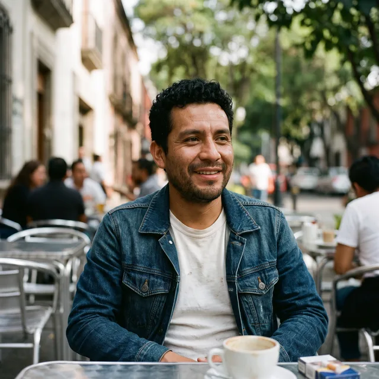
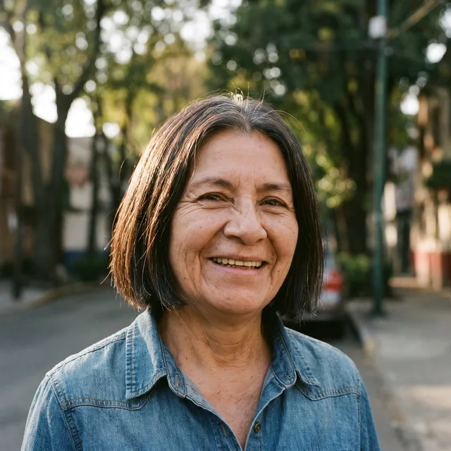
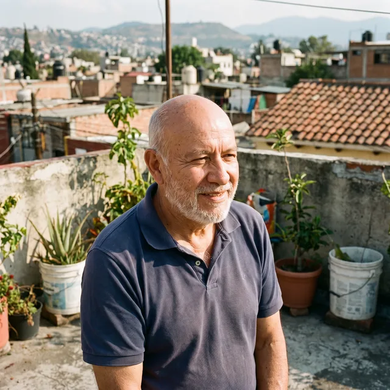

Reseña en Google
Reseña en GoogleEsperanza M.
Atendida con Cirugía de catarata
Volví a ver la cara de mis nietos sin sombras. Me explicaron todo con calma y mi hija estuvo conmigo siempre.
Centro oftalmológico en la Condesa
 Todos tus estudios en una sola visita →
Todos tus estudios en una sola visita →
Estudios, diagnóstico con oftalmólogo y tu plan con precio, el mismo día.
Todos tus estudios, el mismo día
Agudeza visual, presión, topografía, fondo de ojo y lo que tu caso necesite. Sin vueltas a otro laboratorio.
Un oftalmólogo te explica tus resultados
En palabras claras: qué tienes, qué opciones hay y qué recomendamos para ti.
Sales con tu plan y tu precio
Si decides operarte, también sales con fecha. Catarata desde $23,500 MXN por ojo, todo incluido.
Formas de pago
Tu tratamiento,
a tu ritmo
Meses sin intereses con tarjetas participantes, crédito no bancario de aprobación rápida con Fundación Enlace Visual y atención con tu aseguradora. Pregunta por la tuya:
Somos un centro oftalmológico enfocado en una cosa: que llegues con una duda y salgas con un diagnóstico claro y un plan que sí puedes seguir.
Certificados por el Consejo Mexicano de Oftalmología
Miembros de la SMO y la ESCRS
Más de 5,000 procedimientos realizados
4.9 en Google · 403 reseñas
Reseña en GoogleEsperanza M.
Atendida con Cirugía de catarata
Volví a ver la cara de mis nietos sin sombras. Me explicaron todo con calma y mi hija estuvo conmigo siempre.

Reseña en FacebookEmilio V.
Atendida con Cirugía refractiva
En una sola cita supe si era candidato, cuánto costaba y cuándo podía operarme.

Reseña en GooglePatricia L.
Atendida con Valoración oftalmológica
Me hicieron todos los estudios ahí mismo y me dieron el precio antes de decidir nada.

Daniela P.
Atendida con Consulta de ojo seco
Llevaba meses con ardor. Encontraron la causa y hoy trabajo frente a la pantalla sin molestias.

Reseña en DoctoraliaRaúl C.
Atendida con Detección de glaucoma
Me explicaron mis resultados con calma y salí sabiendo exactamente qué seguía.


Cuéntanos qué notas y te escribimos por WhatsApp para confirmar tu cita. En tu visita sales con diagnóstico, plan y precio.
Te respondemos por WhatsApp en minutos
Estudios, diagnóstico y plan el mismo día
Sin costo si eres candidato a cirugía o lentes esclerales
Agudeza visual, presión intraocular, exploración con lámpara de hendidura, dilatación y fondo de ojo, más los estudios que tu caso necesite. Al final un oftalmólogo te explica tus resultados y tu plan.
Es sin costo si eres candidato a cirugía (catarata, LASIK, pterigión, queratocono) o a lentes esclerales. La consulta general cuesta $1,200 MXN y se abona a tu tratamiento.
El paquete con lente intraocular monofocal cuesta $23,500 MXN por ojo e incluye honorarios, quirófano, lente, material, medicamentos de la cirugía y consultas de seguimiento.
Sí. Meses sin intereses con tarjetas participantes, crédito no bancario con Fundación Enlace Visual y atendemos con 17 aseguradoras.
Oftalmólogos certificados por el Consejo Mexicano de Oftalmología, miembros de la SMO y la ESCRS, con más de 5,000 procedimientos realizados.
Depende de los estudios que necesites. La idea es que todo quede en una sola visita: estudios, diagnóstico y plan.
Av. Insurgentes Sur 427, Hipódromo Condesa, a un lado de Sanborns. Lunes a viernes de 13:00 a 20:00.
Citas de lunes a viernes · Condesa, CDMX
Cuéntanos qué notas y te escribimos por WhatsApp para confirmar tu valoración.
¿Qué notas?